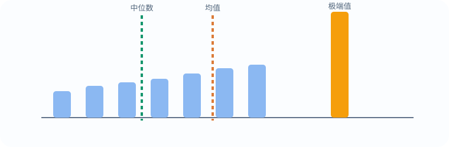

第3章：描述统计（一）——集中趋势与离散趋势
想象你拿到一份包含 1000 条记录的员工工资表，管理者希望用一句话概括薪资水平。你会选择均值、中位数，还是其他指标？不同指标回答的是不同问题。
本章学习目标
- 均值
- 中位数
- 众数

交互实验：一个极端值怎样拉动均值
在同一组工资数据中改变 CEO 的工资，观察均值与中位数如何变化。
交互控件加载后，可调整参数并观察统计量的变化。
大多数人会先想到“平均工资”。但算术平均数可能被少数极端高薪拉高。例如，一家公司公布平均工资 28,000 元，并不意味着大多数员工都接近这个水平；应进一步查看中位数、分位数和岗位分组。均值本身并没有错，关键是它回答的问题是否与你关心的“典型员工薪资”一致。
这一章，我们来系统地学习如何用数字"描述"一堆数据——包括集中趋势（数据往哪集中）和离散程度（数据有多分散）。
3.1 均值：最常用的集中趋势度量
均值（Mean）就是我们通常说的"平均数"。计算公式很简单：把所有值加起来除以个数。
用数学符号表示——
样本均值：x̄ = (x₁ + x₂ + ... + xₙ) / n
总体均值：μ = (x₁ + x₂ + ... + xₙ) / N均值的优点是：它利用了所有数据点的信息，数学性质良好（线性、可微），是很多高级统计方法的基础。但它的致命缺点是：对极端值非常敏感。
举个例子：一个创业团队5个人，月薪分别是：15k, 18k, 20k, 22k, 200k（CEO）。均值 = (15+18+20+22+200)/5 = 55k。这个"55k"能代表任何一个人吗？显然不能。CEO一个人的工资就把整个平均数拉到了25线水平。
3.2 中位数与众数：什么时候该用它们
面对均值的弱点，我们需要另外两个"集中趋势"的度量：
中位数（Median）：把数据从小到大排列，处于中间位置的那个数。如果数据量是偶数，取中间两个数的平均值。中位数的最大优点：不受极端值影响。上面那个例子，五个工资排序后的中位数是20k——这显然更能代表这个团队大多数人的水平。
众数（Mode）：数据中出现次数最多的数值。对于分类数据，众数往往是唯一可用的集中趋势度量。比如"用户最喜欢用的浏览器是Chrome"——这就是众数。
| 度量 | 优点 | 缺点 | 适用场景 |
|---|---|---|---|
| 均值 | 利用所有信息，数学性质好 | 对极端值敏感 | 数据对称分布时 |
| 中位数 | 对极端值稳健 | 没有充分利用数据信息 | 数据有偏态或异常值时 |
| 众数 | 可用于分类数据，直观 | 可能不唯一，可能不存在 | 离散数据、分类数据 |
3.3 极差与四分位距
知道了数据的"中心"在哪里，接下来我们需要知道数据有多"散"。最直观的度量是极差（Range）：最大值减去最小值。极差很简单，但同样对极端值敏感。
更稳健的度量是四分位距（Interquartile Range, IQR）：上四分位数（Q3）减去下四分位数（Q1），也就是中间50%数据的跨度。IQR不受极端值影响，是描述离散程度的优秀指标。
想象两个班级的考试成绩：A班分数范围是60-100，B班是40-100。只看极差的话，A班40分，B班60分——B班更分散。但如果我们用IQR，也许会发现A班的中间50%学生（65-85）比B班（70-90）更分散——这告诉我们B班的分散主要是由几个低分学生造成的。
3.4 方差与标准差：度量离散程度
如果说IQR描述的是"中间50%的分散程度"，那么方差（Variance）和标准差（Standard Deviation）描述的是"每个数据点偏离均值的平均程度"。
方差的计算步骤：
- 计算每个数据点与均值的差（偏差）
- 对每个偏差求平方（消除正负号）
- 求所有平方偏差的平均值
用公式表示：
样本方差：s² = Σ(xᵢ - x̄)² / (n - 1)
样本标准差：s = √s²
注意分母用的是 n-1（而不是 n），这是"贝塞尔校正"——
用样本估计总体时，n-1可以给出无偏估计。标准差和原始数据是同一单位的，这使它比方差更直观。比如一个班级的考试成绩，方差是400（分²），标准差是20（分）。标准差直接告诉我们"大部分人分布在均值±20分之内"。
这里有一个重要的经验法则——切比雪夫不等式：对于任何分布，至少 (1 - 1/k²) 的数据落在均值 ± k 个标准差范围内。比如k=2时，至少75%的数据落在均值±2σ内。这是正态分布的"68-95-99.7法则"的保守版本。
3.5 均值和中位数的选择：收入数据的例子
我们来看一个典型的Python分析示例，计算一家公司薪资数据的各种描述统计指标：
import numpy as np
import pandas as pd
# 模拟薪资数据（单位：千元）
# 注意：这是一个典型的右偏分布
np.random.seed(42)
normal_salaries = np.random.normal(20, 8, 90) # 90个普通员工
exec_salaries = np.random.normal(120, 30, 10) # 10个高管
salaries = np.concatenate([normal_salaries, exec_salaries])
# 计算描述统计量
mean = np.mean(salaries)
median = np.median(salaries)
std = np.std(salaries, ddof=1) # 样本标准差
q1 = np.percentile(salaries, 25)
q3 = np.percentile(salaries, 75)
iqr = q3 - q1
print(f"均值: {mean:.1f}k")
print(f"中位数: {median:.1f}k")
print(f"标准差: {std:.1f}k")
print(f"Q1: {q1:.1f}k, Q3: {q3:.1f}k")
print(f"IQR: {iqr:.1f}k")
print(f"均值 - 中位数 = {mean - median:.1f}k")
# 输出：
# 均值: 30.0k
# 中位数: 21.0k
# 标准差: 29.5k
# Q1: 14.9k, Q3: 26.5k
# IQR: 11.6k
# 均值 - 中位数 = 9.0k想想看，如果HR只报告均值30k，你会觉得公司薪资还不错。但中位数21k告诉你真相——大部分人拿的远比30k少。均值比中位数高了整整9k，这个差距就是极端值（高管薪资）造成的。
📖 踩坑故事：均值的误导
几年前，我为一个创业团队做数据咨询。他们刚刚完成A轮融资，创始人自豪地告诉我"我们团队平均薪资35k，在行业里很有竞争力"。我让他把原始数据发给我。
再看一个数值例子：团队有 40 人，其中 3 位创始合伙人月薪各为 80k，5 位技术负责人各为 50k，剩余 32 位工程师的月薪均为 22k。整体均值为 (3×80 + 5×50 + 32×22) ÷ 40 = 29.85k；中位数为 22k。两个指标都计算正确，但它们回答的问题不同。
创始人自己也在拿80k的"平均"队伍里，所以一直没有发现这个差距。当我把真实分布展示给他看时，他立刻意识到问题——他的"平均薪资很有竞争力"完全是个幻象。如果不及时调整薪资结构，核心工程师迟早会被挖走。
教训：当你看到任何均值报告时，永远追问一句："中位数是多少？"这两个数字的差距直接告诉你数据的偏斜程度。
💡 判断偏态的简便方法：均值 > 中位数 → 右偏（有较大的极端值在右侧）；均值 < 中位数 → 左偏（有较小的极端值在左侧）；均值 ≈ 中位数 → 大致对称。这只是一个粗略判断，下一章我们会用偏度系数做精确度量。
⚠️ 重要提醒：什么时候用均值、什么时候用中位数，是描述统计中最常见的选择题。原则上，如果数据是对称分布且没有异常值，用均值（效率更高）。如果数据有偏态或有异常值，用中位数（更稳健）。很多统计软件默认输出均值，但这不意味着它就是正确的选择——你作为分析师，必须自己做这个判断。
好了，这一章我们讲了集中趋势（均值、中位数、众数）和离散趋势（极差、IQR、方差、标准差）。下一章，我们将继续深入描述统计的第二个部分——分布形态，学习用百分位数、箱线图、偏度和峰度更全面地理解数据的形状。
本章小结
不存在对所有分布都最好的单一中心趋势指标。